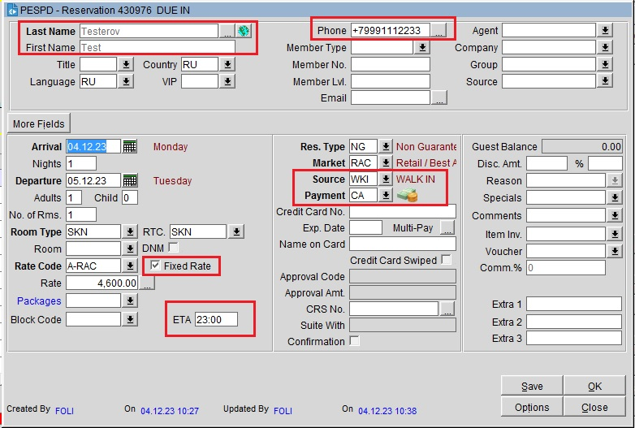

После выбора тарифа откроется окно бронирования.
Необходимо ввести Last Name, First Name, Source (в нашем случае Walk In или Hotel Phone), Payment (Cash), выставить ETA (Estimated Time of Arrival - расчетное время прибытия), указать номер телефона гостя, обязательно поставить галочку на Fixed Rate (если несколько ночей и стоимость меняется, то ставим Fixed rate через Daily Details на каждую ночь).
Fixed rate необходим для того, чтобы зафиксировать озвученную стоимость. Т.к. тарифы обновляют, то без этой галочки, тариф в сделанном бронировании тоже обновится и при заселении гостю будет озвучена не та стоимость, которую он бронировал. Если кто-то при создании брони не поставил Fixed Rate и стоимость проживания изменилась, можно зайти в Options → Changes → пролистать в самый низ списка активностей и посмотреть изначальную стоимость, после чего изменить тариф вручную через Daily Details и поставить Fixed Rate.
После нажатия кнопки Save, бронированию будет присвоен шестизначный внутренний номер брони, который пишется в шапке окна брони, его можно назвать гостю (по этому номеру можно найти бронь в Arrivals/Update Reservations через поле Conf/Cxl No.).
Если есть какая-то другая информация, ее нужно указать в Comments.
Готовое бронирование выглядит следующим образом:

Если гость забронировал поздний выезд, в брони нажимаем More Fields и выставляем время выезда в C/O Time. Таким образом при создании ключа, нужное время выезда выставится автоматически.
После создания бронирования от стойки или по телефону обязательно проговариваем всю информацию о брони:
- Бронирование сделано на Testerov Test, с 04.12 по 05.12 на 1 ночь, для 1 гостя. Стандартный номер с одной двуспальной кроватью, завтрак включен, примерное время прибытия гостя 23 часа. Стоимость проживания составит 4600р.
Чтобы отменить созданную бронь: Front Desk → Arrivals, выбрать бронирование, справа меню быстрого доступа, кнопка Cancel, в Reason выбрать No Reason Given.
Либо через Options в брони → Cancel, в Reason выбрать No Reason Given.